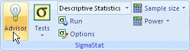

Using the Advisor Wizard
To use the Advisor Wizard:
-
On the Analysis tab, in the
SigmaStat group, click
Advisor.

- When the Advisor Wizard appears, answer the questions about what you want to do and the format of your data. Click Next to go to the next panel, Back to go to the preceding panel, Finish to view the suggested test, or Cancel to close the Advisor Wizard.
-
After the Advisor Wizard suggests a test, click
Run to perform the test. The Select
Data panel for the suggested test appears prompting you to
select the worksheet columns with the data you want to test.
The remainder of this section describes the answers for each dialog box.